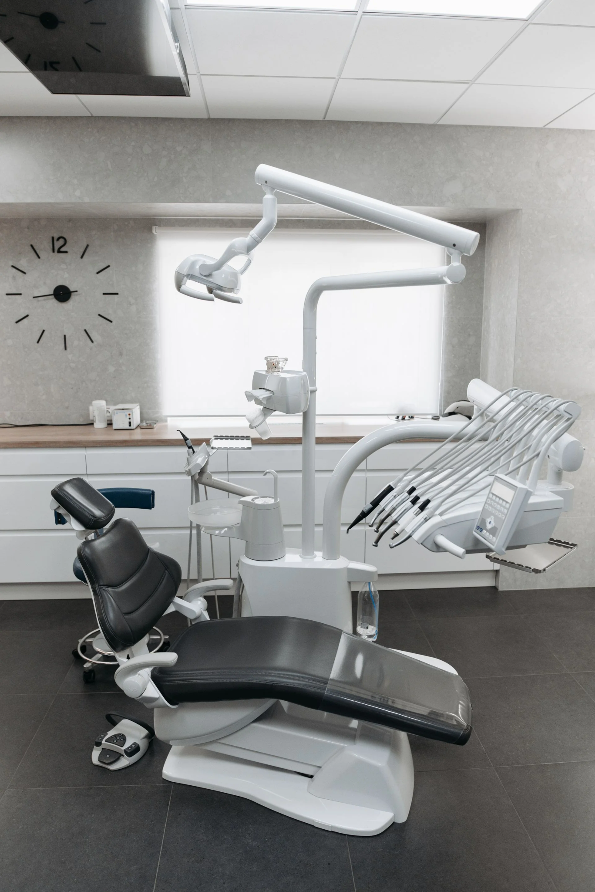

Imagem ilustrativa · não retrata o local ou a equipe
Imagem ilustrativa · não retrata o local ou a equipe01 / Odontologia · Monte Aprazível
Qualidade e responsabilidade, do primeiro atendimento ao sorriso.
Clínica Odonto Bites. A Clínica Odonto Bites atende a família em Monte Aprazível, com odontopediatria, implantes, ortodontia, facetas e estética dental, e raio X na própria clínica.
- Odontologia
- CRO-PJ 035572
- Monte Aprazível

Imagem ilustrativa · não retrata o local ou a equipe02 / Conheça a proposta
Odontologia para a família, em Monte Aprazível.
Odontopediatria
Atendimento infantil com destaque próprio no perfil da clínica.
Implantes e ortodontia
Áreas divulgadas pela clínica. Indicação e planejamento dependem de avaliação.
Facetas e estética dental
Cuidados com a estética do sorriso, apresentados nos destaques do perfil.
Endodontia
A clínica explica em seus conteúdos o tratamento de canal. Cada caso é avaliado individualmente.
Raio X na própria clínica
Radiografia no mesmo local do atendimento, o que ajuda a organizar diagnóstico e retorno.
 Imagem ilustrativa · não retrata o local ou a equipe
Imagem ilustrativa · não retrata o local ou a equipe03 / Trajetória & cuidado
Uma clínica que se identifica pelo nome do responsável.
A Clínica Odonto Bites se identifica pelo lema "Qualidade e Responsabilidade" e publica, no próprio perfil, o responsável técnico, Dr. Lucas Ballero (CRO 111210), e o registro da clínica, CRO-PJ 035572. O atendimento é na Rua Presidente Vargas, no Centro de Monte Aprazível, para crianças e adultos.
- Responsável técnico e registro da clínica publicados no perfil
- Raio X dentro da clínica
- Odontopediatria com destaque próprio
- Nota 5,0 nas avaliações do Google
 Imagem ilustrativa · não retrata o local ou a equipe
Imagem ilustrativa · não retrata o local ou a equipe04 / Seu próximo passo
Vamos conversar?
Monte Aprazível/SPConversar pelo WhatsApp ↗
Ver mapa do endereço +
Consulte horários, disponibilidade e condições pelo WhatsApp.
Odontologia · Monte Aprazível